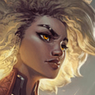

核心裝備
 黎明法衣
黎明法衣銳兒有大量穩定控制，黎明法衣能把每次開戰都變成隊友更好跟的傷害窗口。
 冰霜之心
冰霜之心對多射手與鬥士環境很實用，還能補足技能循環。
 自然之力
自然之力法傷多時提供高魔抗與移速，能更穩地黏住目標。
 雅瑪蘭守護像
雅瑪蘭守護像銳兒會長時間待在敵陣中心，守護像能大幅提升後期坦度。
 荊棘之甲
荊棘之甲重創加護甲對多數 ARAM 對局都很好用。

Rell · 強制開戰／保排反開型坦克
銳兒最強的地方是團戰一旦黏上去就很難讓人離開。開戰成功時能把敵人整坨拉在一起；就算不先手，也能用強力反開保住後排。
本站評級理由：銳兒在 ARAM 的狹窄地形很容易把擊飛、吸附與群控全部串起來，既能主動開戰也能站在後排旁邊做強力反手。
目前本站先依 7.2b 未見額外追加修正的通用基準呈現；若官方後續補充銳兒專屬 ARAM 數值，會再同步更新。
銳兒有大量穩定控制，黎明法衣能把每次開戰都變成隊友更好跟的傷害窗口。
對多射手與鬥士環境很實用，還能補足技能循環。
法傷多時提供高魔抗與移速，能更穩地黏住目標。
銳兒會長時間待在敵陣中心，守護像能大幅提升後期坦度。
重創加護甲對多數 ARAM 對局都很好用。

銳兒需要穩定走進人群，韌性與魔抗能顯著提高開戰容錯。

升級三級鞋後更不怕法傷與控制，進場時還能取得額外護盾。

群控命中後額外減速區很容易把敵人整坨留住。

每次進場都能立刻得到護盾，對銳兒非常關鍵。

降低進場第一波吃到的爆發傷害。

單線持續吃兵可穩定增加最大生命。

使用召喚師技能後獲得跑速，方便開戰後追擊或撤退。

閃現接進場或大絕都能創造很強的突然開戰。

黏住敵方主力後馬上套虛弱，能把對面爆發大幅壓低。
2 技 > 1 技 > 3 技
ARAM 開局三個基礎技能各點 1 級，之後主升 2 技、次升 1 技；大絕能點就點。
不要一開始就盲目跳進去，先利用存在感壓縮對手站位，等隊友技能就緒或對方交過位移再找真正好開的時機。
做出黎明法衣與冰霜之心後，銳兒的每次進場都很難忽視。你可以主動開，也可以守在己方後排旁邊專門反衝臉角色。
後期銳兒的價值在於團控連鎖。只要能把最危險的那幾個人吸住，讓隊友自由輸出，你的任務就完成了。
 好戰者鎧甲
好戰者鎧甲想反覆開戰時很好用。
 深淵面具
深淵面具進場貼人後能順便幫法師隊友放大輸出。
 蘭頓之兆
蘭頓之兆針對暴擊核心時很實用。
看遊戲卡片下方分類 → 點相同分類 → 看左側 S+／S／A。
二技能、大絕與其他控制手段能高頻觸發，直接放大銳兒最重要的團控價值。
系列偏坦度、反位移與貼身控制，和銳兒進場後的工作完全重疊。
生命、雙防與體型都能提高前排承傷，部分卡還會延長控場時間。
二技能能提供護盾，護盾免控與獲盾觸發效果對進場很實用。
控制技能冷卻越短，就越容易打出第二輪留人與保排。
大絕與近身技能能利用部分大絕強化、坦度與多段技能連動。
7.2b ARAM S+ 第三批：銳兒以群體控制、強開與反開價值列入 S+；裝備與符文依 7.2b 版本環境與現行站內模板整理。
ARAM 使用獨立於召喚峽谷的資料集；本站會把官方模式平衡、單線 5v5 特性與出裝／符文適配分開判斷，而不是直接複製峽谷配置。